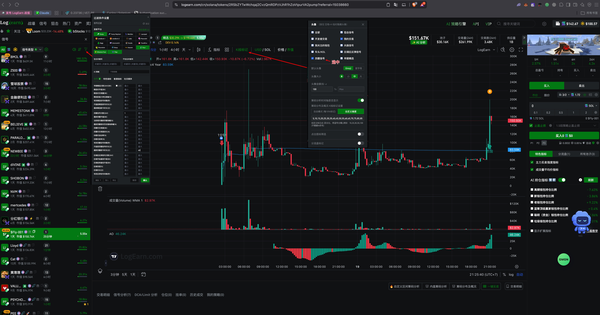
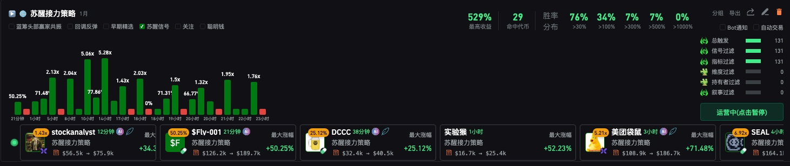
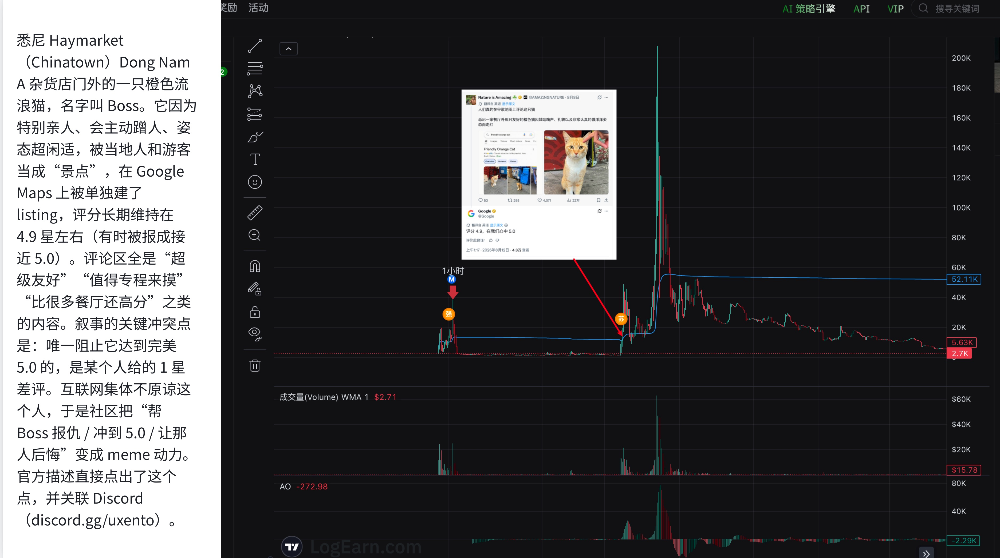
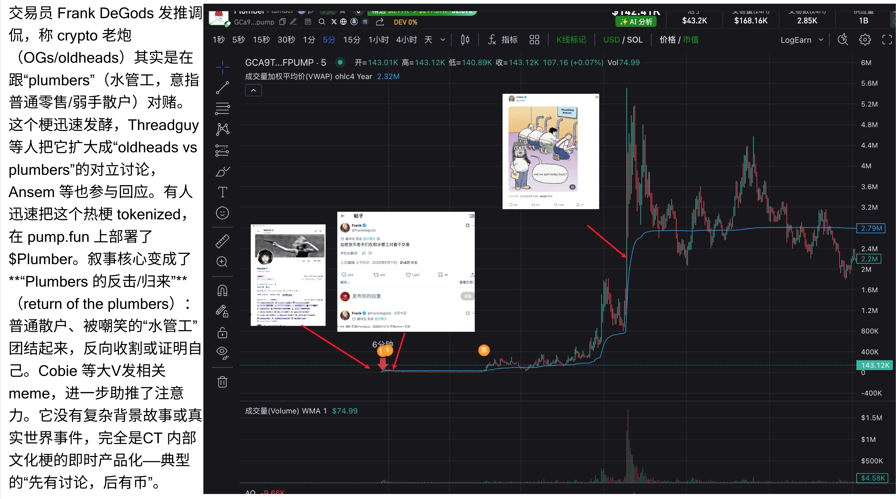
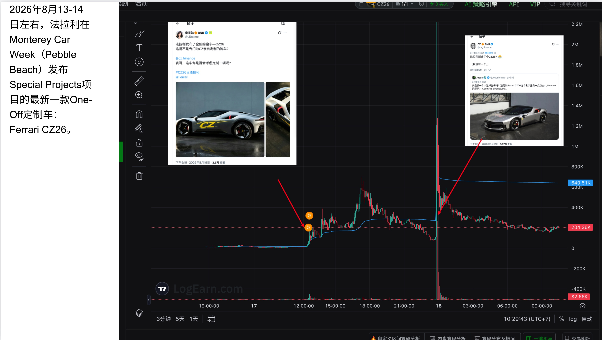
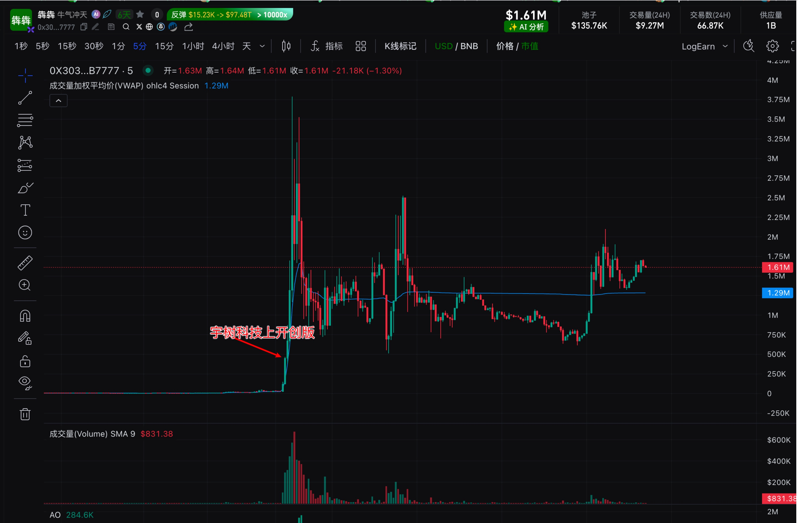
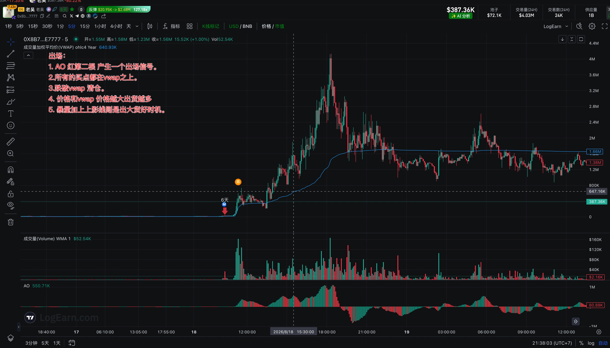

两个抓苏醒盘的方式
两种方式解决的是同一个问题：尽快发现进入苏醒阶段的代币。看板适合手动筛选和盯盘，策略适合持续运行和自动发现。
方式 1：搭建苏醒看板
进入信号榜单的过滤条件，将信号类型只保留“苏醒信号”，确认后即可得到专门的苏醒看板。

打开信号榜单右上角的过滤入口，在“头像”分类中勾选“苏醒信号”，其他过滤条件可按自己的关注范围继续收紧。
方式 2：使用苏醒策略
在 AI 策略引擎中使用“苏醒接力策略”，系统会持续过滤苏醒信号，并在策略卡中展示命中目标、最大涨幅和胜率分布。

策略卡可查看最高收益、命中代币、不同涨幅档位胜率、过滤层状态和最近命中的代币。
苏醒战法核心：结合叙事
苏醒信号负责发现盘面重新活跃，叙事负责判断这次活跃有没有持续传播的理由。两者同时出现，才值得优先观察。

大 V 先发布橙猫 Boss 的故事，随后 Google 官方账号参与回复，原本的小众话题获得更强的官方背书和传播入口。图中箭头位置附近，盘面开始重新放量并进入苏醒阶段。

交易员围绕“oldheads vs plumbers”制造对立讨论，随后更多社区大 V 参与回应，话题被快速产品化为代币。叙事从内部文化梗扩散成可交易热点，盘面随讨论升温而苏醒。

法拉利 C726 事件先带来第一轮注意力，后续相关官方账号互动形成第二次催化。图中两处箭头对应两轮叙事传播，盘面也出现两次明显放量和价格反应。

长期沉寂后出现与宇树科技相关的新消息，旧叙事获得新的传播理由。消息点附近成交量突然放大，价格快速脱离低位，形成典型的事件驱动型苏醒。
苏醒出场方式
出场不只看一个指标。优先观察 AO、VWAP、成交量和 K 线形态是否同时转弱；多个信号叠加时，应更主动地减仓或退出。

图中从 AO、VWAP、价格距离和放量上影线四个角度标出了常见的出场判断。
AO 由强转弱并连续出现红柱时，视为一条出场预警，第二根红柱可作为更明确的确认信号。
理想的强势阶段应运行在 VWAP 上方；若价格持续失去 VWAP 支撑，需要降低继续持有的预期。
价格明确跌破 VWAP 且不能快速收回时，按该战法的纪律退出，避免弱势阶段继续消耗利润。
价格大幅偏离 VWAP，代表短期涨幅已经加速。距离越大，越应主动分批落袋，而不是等待单一顶部信号。
高位突然放出巨量，同时 K 线留下明显上影线，说明抛压增强，是减仓或退出的重要时机。